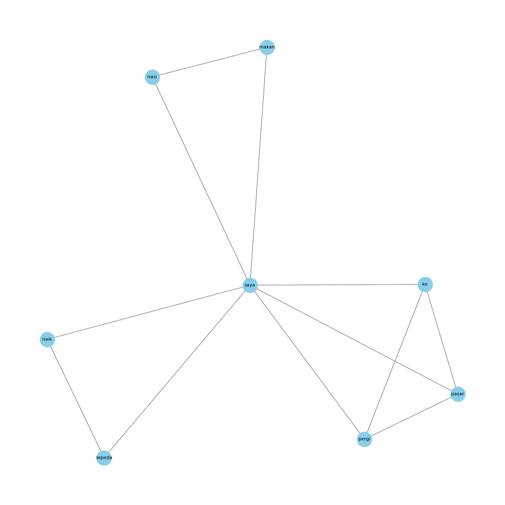

Text Rank untuk mencari kata kunci data berita#
Ambil data berita#
import os
%cd /content/
os.mkdir('data_berita')
import gdown
# download data
nama_data = '/content/data_berita/data_berita.csv'
gdown.download(f'https://drive.google.com/uc?id=1vu67IeDIAWTCH9hk4C39DrH9JKXHpUVi', nama_data, quiet=False)
/content
---------------------------------------------------------------------------
FileExistsError Traceback (most recent call last)
<ipython-input-1-c8125b64ee4c> in <cell line: 4>()
2
3 get_ipython().run_line_magic('cd', '/content/')
----> 4 os.mkdir('data_berita')
5
6 import gdown
FileExistsError: [Errno 17] File exists: 'data_berita'
import pandas as pd
data_berita = pd.read_csv('/content/data_berita/data_berita.csv')
data_berita
| Judul | Berita | Label | |
|---|---|---|---|
| 0 | Orang Tua Luis Diaz Diculik: 2 Orang Penculik ... | Orang tua Luis Diaz diculik di Kolombia, sebua... | Olahraga |
| 1 | Pertandingan AS Roma vs Monza Berakhir Tipis 1... | Pertandingan AS Roma vs Monza merupakan laga l... | Olahraga |
| 2 | Papu Gomez Positif Doping: 2 Tahun Larangan Be... | Pemain sepak bola asal Argentina, Papu Gomez, ... | Olahraga |
| 3 | Hasil Denmark Open 2023: Saingan Fajar/Rian Be... | Sebagai andalan utama ganda putra Indonesia, F... | Olahraga |
| 4 | Akibat Benzema Dukung Palestina, Menteri Pranc... | Karim Benzema bakal mengajukan tuntutan hukum ... | Olahraga |
| ... | ... | ... | ... |
| 595 | Teaser Lagu Choi Yena “Hate Rodrigo” Tuai Krit... | Teaser lagu Choi Yena dengan judul Hate Rodrig... | Entertaiment |
| 596 | Rilis MV “Move”, TREASURE Sub Unit T5 Resmi De... | TREASURE sub unit T5 akhirnya comeback dan lan... | Entertaiment |
| 597 | Ucapan Hari Raya Idul Adha: Menyambut Hari Kem... | Hari Raya Idul Adha, juga dikenal sebagai Hari... | Entertaiment |
| 598 | Resmi! David Corenswet Ditunjuk Sebagai Pemera... | Warner Bros dan DC Studios telah menemukan pem... | Entertaiment |
| 599 | Dengkul Getar Trending, Selebgram Hanum Mega B... | Selebgram Hanum Mega putuskan cerai usai kemba... | Entertaiment |
600 rows × 3 columns
Normalisasi#
import nltk
from nltk.tokenize import word_tokenize
from nltk.corpus import stopwords
import string
import pandas as pd
import numpy as np
import re
import warnings
from nltk.stem import PorterStemmer
nltk.download('stopwords')
nltk.download('punkt')
warnings.filterwarnings('ignore')
[nltk_data] Downloading package stopwords to /root/nltk_data...
[nltk_data] Unzipping corpora/stopwords.zip.
[nltk_data] Downloading package punkt to /root/nltk_data...
[nltk_data] Unzipping tokenizers/punkt.zip.
Cek data kosong#
# cek apakah ada data yang kosong
data_berita.isnull().sum()
Judul 0
Berita 0
Label 0
dtype: int64
Punctuation#
data_berita['berita_clean'] = data_berita['Berita'].str.replace(r'[^\w\s,.?!]', '', regex=True).str.lower()
data_berita['berita_clean'] = data_berita['berita_clean'].str.replace('\d+', '', regex=True)
Stopword#
# Inisialisasi kamus stop words dari NLTK
stop_words = set(stopwords.words('indonesian')) # Inisialisasi kamus stop words di luar loop
# Fungsi untuk menghapus stop words
def remove_stopwords(text):
if isinstance(text, str): # Periksa apakah teks adalah string
return ' '.join(word for word in text.split() if word not in stop_words)
else:
return '' # Mengembalikan string kosong untuk nilai non-string
data_berita['berita_Stopword'] = data_berita['berita_clean'].apply(remove_stopwords)
data_berita
| Judul | Berita | Label | berita_clean | berita_Stopword | |
|---|---|---|---|---|---|
| 0 | Orang Tua Luis Diaz Diculik: 2 Orang Penculik ... | Orang tua Luis Diaz diculik di Kolombia, sebua... | Olahraga | orang tua luis diaz diculik di kolombia, sebua... | orang tua luis diaz diculik kolombia, peristiw... |
| 1 | Pertandingan AS Roma vs Monza Berakhir Tipis 1... | Pertandingan AS Roma vs Monza merupakan laga l... | Olahraga | pertandingan as roma vs monza merupakan laga l... | pertandingan as roma vs monza laga lanjutan pe... |
| 2 | Papu Gomez Positif Doping: 2 Tahun Larangan Be... | Pemain sepak bola asal Argentina, Papu Gomez, ... | Olahraga | pemain sepak bola asal argentina, papu gomez, ... | pemain sepak bola argentina, papu gomez, membe... |
| 3 | Hasil Denmark Open 2023: Saingan Fajar/Rian Be... | Sebagai andalan utama ganda putra Indonesia, F... | Olahraga | sebagai andalan utama ganda putra indonesia, f... | andalan utama ganda putra indonesia, fajarrian... |
| 4 | Akibat Benzema Dukung Palestina, Menteri Pranc... | Karim Benzema bakal mengajukan tuntutan hukum ... | Olahraga | karim benzema bakal mengajukan tuntutan hukum ... | karim benzema mengajukan tuntutan hukum menter... |
| ... | ... | ... | ... | ... | ... |
| 595 | Teaser Lagu Choi Yena “Hate Rodrigo” Tuai Krit... | Teaser lagu Choi Yena dengan judul Hate Rodrig... | Entertaiment | teaser lagu choi yena dengan judul hate rodrig... | teaser lagu choi yena judul hate rodrigo menua... |
| 596 | Rilis MV “Move”, TREASURE Sub Unit T5 Resmi De... | TREASURE sub unit T5 akhirnya comeback dan lan... | Entertaiment | treasure sub unit t akhirnya comeback dan lang... | treasure sub unit t comeback langsung merilis ... |
| 597 | Ucapan Hari Raya Idul Adha: Menyambut Hari Kem... | Hari Raya Idul Adha, juga dikenal sebagai Hari... | Entertaiment | hari raya idul adha, juga dikenal sebagai hari... | raya idul adha, dikenal raya kurban, momen uma... |
| 598 | Resmi! David Corenswet Ditunjuk Sebagai Pemera... | Warner Bros dan DC Studios telah menemukan pem... | Entertaiment | warner bros dan dc studios telah menemukan pem... | warner bros dc studios menemukan pemeran film ... |
| 599 | Dengkul Getar Trending, Selebgram Hanum Mega B... | Selebgram Hanum Mega putuskan cerai usai kemba... | Entertaiment | selebgram hanum mega putuskan cerai usai kemba... | selebgram hanum mega putuskan cerai bongkar pe... |
600 rows × 5 columns
Tokenisasi#
data_berita['berita_token'] = data_berita['berita_Stopword'].apply(word_tokenize)
data_berita
| Judul | Berita | Label | berita_clean | berita_Stopword | berita_token | |
|---|---|---|---|---|---|---|
| 0 | Orang Tua Luis Diaz Diculik: 2 Orang Penculik ... | Orang tua Luis Diaz diculik di Kolombia, sebua... | Olahraga | orang tua luis diaz diculik di kolombia, sebua... | orang tua luis diaz diculik kolombia, peristiw... | [orang, tua, luis, diaz, diculik, kolombia, ,,... |
| 1 | Pertandingan AS Roma vs Monza Berakhir Tipis 1... | Pertandingan AS Roma vs Monza merupakan laga l... | Olahraga | pertandingan as roma vs monza merupakan laga l... | pertandingan as roma vs monza laga lanjutan pe... | [pertandingan, as, roma, vs, monza, laga, lanj... |
| 2 | Papu Gomez Positif Doping: 2 Tahun Larangan Be... | Pemain sepak bola asal Argentina, Papu Gomez, ... | Olahraga | pemain sepak bola asal argentina, papu gomez, ... | pemain sepak bola argentina, papu gomez, membe... | [pemain, sepak, bola, argentina, ,, papu, gome... |
| 3 | Hasil Denmark Open 2023: Saingan Fajar/Rian Be... | Sebagai andalan utama ganda putra Indonesia, F... | Olahraga | sebagai andalan utama ganda putra indonesia, f... | andalan utama ganda putra indonesia, fajarrian... | [andalan, utama, ganda, putra, indonesia, ,, f... |
| 4 | Akibat Benzema Dukung Palestina, Menteri Pranc... | Karim Benzema bakal mengajukan tuntutan hukum ... | Olahraga | karim benzema bakal mengajukan tuntutan hukum ... | karim benzema mengajukan tuntutan hukum menter... | [karim, benzema, mengajukan, tuntutan, hukum, ... |
| ... | ... | ... | ... | ... | ... | ... |
| 595 | Teaser Lagu Choi Yena “Hate Rodrigo” Tuai Krit... | Teaser lagu Choi Yena dengan judul Hate Rodrig... | Entertaiment | teaser lagu choi yena dengan judul hate rodrig... | teaser lagu choi yena judul hate rodrigo menua... | [teaser, lagu, choi, yena, judul, hate, rodrig... |
| 596 | Rilis MV “Move”, TREASURE Sub Unit T5 Resmi De... | TREASURE sub unit T5 akhirnya comeback dan lan... | Entertaiment | treasure sub unit t akhirnya comeback dan lang... | treasure sub unit t comeback langsung merilis ... | [treasure, sub, unit, t, comeback, langsung, m... |
| 597 | Ucapan Hari Raya Idul Adha: Menyambut Hari Kem... | Hari Raya Idul Adha, juga dikenal sebagai Hari... | Entertaiment | hari raya idul adha, juga dikenal sebagai hari... | raya idul adha, dikenal raya kurban, momen uma... | [raya, idul, adha, ,, dikenal, raya, kurban, ,... |
| 598 | Resmi! David Corenswet Ditunjuk Sebagai Pemera... | Warner Bros dan DC Studios telah menemukan pem... | Entertaiment | warner bros dan dc studios telah menemukan pem... | warner bros dc studios menemukan pemeran film ... | [warner, bros, dc, studios, menemukan, pemeran... |
| 599 | Dengkul Getar Trending, Selebgram Hanum Mega B... | Selebgram Hanum Mega putuskan cerai usai kemba... | Entertaiment | selebgram hanum mega putuskan cerai usai kemba... | selebgram hanum mega putuskan cerai bongkar pe... | [selebgram, hanum, mega, putuskan, cerai, bong... |
600 rows × 6 columns
Gabung Hasil Tokenizing#
data_berita['full_text'] = data_berita['berita_token'].apply(lambda tokens: ' '.join(tokens))
data_berita
| Judul | Berita | Label | berita_clean | berita_Stopword | berita_token | full_text | |
|---|---|---|---|---|---|---|---|
| 0 | Orang Tua Luis Diaz Diculik: 2 Orang Penculik ... | Orang tua Luis Diaz diculik di Kolombia, sebua... | Olahraga | orang tua luis diaz diculik di kolombia, sebua... | orang tua luis diaz diculik kolombia, peristiw... | [orang, tua, luis, diaz, diculik, kolombia, ,,... | orang tua luis diaz diculik kolombia , peristi... |
| 1 | Pertandingan AS Roma vs Monza Berakhir Tipis 1... | Pertandingan AS Roma vs Monza merupakan laga l... | Olahraga | pertandingan as roma vs monza merupakan laga l... | pertandingan as roma vs monza laga lanjutan pe... | [pertandingan, as, roma, vs, monza, laga, lanj... | pertandingan as roma vs monza laga lanjutan pe... |
| 2 | Papu Gomez Positif Doping: 2 Tahun Larangan Be... | Pemain sepak bola asal Argentina, Papu Gomez, ... | Olahraga | pemain sepak bola asal argentina, papu gomez, ... | pemain sepak bola argentina, papu gomez, membe... | [pemain, sepak, bola, argentina, ,, papu, gome... | pemain sepak bola argentina , papu gomez , mem... |
| 3 | Hasil Denmark Open 2023: Saingan Fajar/Rian Be... | Sebagai andalan utama ganda putra Indonesia, F... | Olahraga | sebagai andalan utama ganda putra indonesia, f... | andalan utama ganda putra indonesia, fajarrian... | [andalan, utama, ganda, putra, indonesia, ,, f... | andalan utama ganda putra indonesia , fajarria... |
| 4 | Akibat Benzema Dukung Palestina, Menteri Pranc... | Karim Benzema bakal mengajukan tuntutan hukum ... | Olahraga | karim benzema bakal mengajukan tuntutan hukum ... | karim benzema mengajukan tuntutan hukum menter... | [karim, benzema, mengajukan, tuntutan, hukum, ... | karim benzema mengajukan tuntutan hukum menter... |
| ... | ... | ... | ... | ... | ... | ... | ... |
| 595 | Teaser Lagu Choi Yena “Hate Rodrigo” Tuai Krit... | Teaser lagu Choi Yena dengan judul Hate Rodrig... | Entertaiment | teaser lagu choi yena dengan judul hate rodrig... | teaser lagu choi yena judul hate rodrigo menua... | [teaser, lagu, choi, yena, judul, hate, rodrig... | teaser lagu choi yena judul hate rodrigo menua... |
| 596 | Rilis MV “Move”, TREASURE Sub Unit T5 Resmi De... | TREASURE sub unit T5 akhirnya comeback dan lan... | Entertaiment | treasure sub unit t akhirnya comeback dan lang... | treasure sub unit t comeback langsung merilis ... | [treasure, sub, unit, t, comeback, langsung, m... | treasure sub unit t comeback langsung merilis ... |
| 597 | Ucapan Hari Raya Idul Adha: Menyambut Hari Kem... | Hari Raya Idul Adha, juga dikenal sebagai Hari... | Entertaiment | hari raya idul adha, juga dikenal sebagai hari... | raya idul adha, dikenal raya kurban, momen uma... | [raya, idul, adha, ,, dikenal, raya, kurban, ,... | raya idul adha , dikenal raya kurban , momen u... |
| 598 | Resmi! David Corenswet Ditunjuk Sebagai Pemera... | Warner Bros dan DC Studios telah menemukan pem... | Entertaiment | warner bros dan dc studios telah menemukan pem... | warner bros dc studios menemukan pemeran film ... | [warner, bros, dc, studios, menemukan, pemeran... | warner bros dc studios menemukan pemeran film ... |
| 599 | Dengkul Getar Trending, Selebgram Hanum Mega B... | Selebgram Hanum Mega putuskan cerai usai kemba... | Entertaiment | selebgram hanum mega putuskan cerai usai kemba... | selebgram hanum mega putuskan cerai bongkar pe... | [selebgram, hanum, mega, putuskan, cerai, bong... | selebgram hanum mega putuskan cerai bongkar pe... |
600 rows × 7 columns
Term Freq#
from sklearn.feature_extraction.text import CountVectorizer
satu_berita = "saya makan nasi, saya pergi ke pasar, saya naik sepeda"
list_berita = [satu_berita]
list_3Kalimat = ['saya makan nasi', 'saya pergi ke pasar', 'saya naik sepeda']
tf_vectorizer = CountVectorizer()
tf_matrix = tf_vectorizer.fit_transform(list_3Kalimat).toarray()
terms = tf_vectorizer.get_feature_names_out()
berita_tfidf = pd.DataFrame(tf_matrix, columns=terms)
berita_tfidf.insert(0, 'Berita', list_3Kalimat)
berita_tfidf
| Berita | ke | makan | naik | nasi | pasar | pergi | saya | sepeda | |
|---|---|---|---|---|---|---|---|---|---|
| 0 | saya makan nasi | 0 | 1 | 0 | 1 | 0 | 0 | 1 | 0 |
| 1 | saya pergi ke pasar | 1 | 0 | 0 | 0 | 1 | 1 | 1 | 0 |
| 2 | saya naik sepeda | 0 | 0 | 1 | 0 | 0 | 0 | 1 | 1 |
Co-Occurance Matrics#
# Membuat Co-occurrence Matrix
co_occurrence_matrix = np.dot(tf_matrix.T, tf_matrix)
# Mengganti diagonal dengan nol (karena kita tidak ingin memperhitungkan kata dengan dirinya sendiri)
np.fill_diagonal(co_occurrence_matrix, 0)
# Membuat DataFrame Co-occurrence
co_occurrence_df = pd.DataFrame(co_occurrence_matrix, index=terms, columns=terms)
# Tampilkan DataFrame Co-occurrence
co_occurrence_df
| ke | makan | naik | nasi | pasar | pergi | saya | sepeda | |
|---|---|---|---|---|---|---|---|---|
| ke | 0 | 0 | 0 | 0 | 1 | 1 | 1 | 0 |
| makan | 0 | 0 | 0 | 1 | 0 | 0 | 1 | 0 |
| naik | 0 | 0 | 0 | 0 | 0 | 0 | 1 | 1 |
| nasi | 0 | 1 | 0 | 0 | 0 | 0 | 1 | 0 |
| pasar | 1 | 0 | 0 | 0 | 0 | 1 | 1 | 0 |
| pergi | 1 | 0 | 0 | 0 | 1 | 0 | 1 | 0 |
| saya | 1 | 1 | 1 | 1 | 1 | 1 | 0 | 1 |
| sepeda | 0 | 0 | 1 | 0 | 0 | 0 | 1 | 0 |
import networkx as nx
import matplotlib.pyplot as plt
# Mengubah DataFrame Co-occurrence menjadi graf
G = nx.from_pandas_adjacency(co_occurrence_df)
# Menentukan posisi node pada graf
pos = nx.spring_layout(G)
# Menggambar graf
plt.figure(figsize=(12, 12))
nx.draw(G, pos, with_labels=True, font_size=8, font_color='black', node_size=700, node_color='skyblue', edge_color='gray', linewidths=0.1)
# Menampilkan graf
plt.show()

Centrality#
Closeness Centrality#
# Hitung closeness centrality
closeness_centrality = nx.closeness_centrality(G)
closeness_centrality
{'ke': 0.6363636363636364,
'makan': 0.5833333333333334,
'naik': 0.5833333333333334,
'nasi': 0.5833333333333334,
'pasar': 0.6363636363636364,
'pergi': 0.6363636363636364,
'saya': 1.0,
'sepeda': 0.5833333333333334}
Page Rank#
pagerank = nx.pagerank(G)
pagerank
{'ke': 0.12046234618241228,
'makan': 0.09078416558430245,
'naik': 0.09078416558430245,
'nasi': 0.09078416558430245,
'pasar': 0.12046234618241228,
'pergi': 0.12046234618241228,
'saya': 0.27547629911555305,
'sepeda': 0.09078416558430245}
Meranking node dari centrality#
sorted_closeness = dict(sorted(closeness_centrality.items(), key=lambda item: item[1], reverse=True))
sorted_closeness
{'saya': 1.0,
'ke': 0.6363636363636364,
'pasar': 0.6363636363636364,
'pergi': 0.6363636363636364,
'makan': 0.5833333333333334,
'naik': 0.5833333333333334,
'nasi': 0.5833333333333334,
'sepeda': 0.5833333333333334}
Menentukan Kata penting berdasarkan ranking#
kalimat_tertinggi = []
for i in range(5):
max_key = None
max_value = None
for key, value in sorted_closeness.items():
if key not in kalimat_tertinggi and (max_value is None or value > max_value):
max_key = key
max_value = value
if max_key is not None:
kalimat_tertinggi.append(max_key)
kalimat_tertinggi
['saya', 'ke', 'pasar', 'pergi', 'makan']